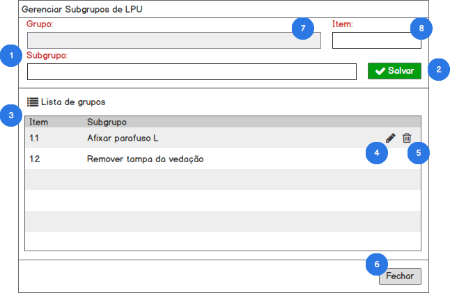

Funcionalidade: Gerenciar subgrupos de itens de LPU#
Como usuário com perfil (1. Diretor, 2. Gerente) no SisGeop, eu quero gerenciar a lista de grupos de itens de LPU.
PROTÓTIPO#

Contexto
- Para acessar essa funcionalidade o usuário aciona o botão Gerenciar subgrupos de Itens a partir de qualquer tela relacionada;
- O sistema deverá abrir uma janela modal para o gerenciamento dos subgrupos de itens de LPU;
DETALHAMENTO DAS FUNCIONALIDADES#
1. FORMULÁRIO DE EDIÇÃO / INCLUSÃO DE SUBGRUPOS#
QUANDO o usuário acionar o botão Gerenciar subgrupos de itens a partir de qualquer tela relacionada
ENTÃO o sistema exibirá a janela modal para o gerenciamento dos subgrupos de itens de LPU
2. INCLUIR SUBGRUPO#
QUANDO o usuário clicar no botão Salvar
ENTÃO o sistema irá validar o formulário preenchido pelo usuário
2.1 Formulário inválido#
CASO o formulário preenchido pelo usuário não esteja preenchido corretamente
ENTÃO o sistema exibe a mensagem "Os campos destacados são de preenchimento obrigatório"
2.2 Nome de subgrupo duplicado#
CASO o nome do subgrupo informado pelo usuário já esteja em utilização por outro subgrupo no mesmo grupo
ENTÃO o sistema exibe a mensagem "O nome do subgrupo informado já está em utilização!"
2.3 Código do item duplicado#
CASO o código do item do subgrupo informado pelo usuário já esteja em utilização por outro subgrupo no mesmo grupo
ENTÃO o sistema exibe a mensagem "O código do item do subgrupo informado já está em utilização!"
2.4 Formulário válido#
CASO o usuário preencha o formulário adequadamente
ENTÃO o sistema exibe a mensagem "Registro incluído com sucesso"
E atualiza a lista de Subgrupos
E reseta o formulário de inclusão
3. LISTA DE SUBGRUPOS#
A lista de subgrupos irá exibir a relação de todos os subgrupos de itens de LPU cadastrados no SisGeop.
4. EDITAR SUBGRUPO#
QUANDO o usuário clicar no botão Editar na listagem de subgrupos
ENTÃO o sistema irá carregar os dados do subgrupo selecionado no formulário de edição
E o sistema irá exibir o botão Cancelar ao lado do botão Salvar
4.1 Cancelar edição de subgrupo#
QUANDO o usuário clicar no botão Cancelar
ENTÃO o sistema reseta o formulário de edição
E oculta o botão Cancelar
4.2 Nome de subgrupo duplicado#
CASO o nome do subgrupo informado pelo usuário já esteja em utilização por outro subgrupo no mesmo grupo
ENTÃO o sistema exibe a mensagem "O nome do subgrupo informado já está em utilização!"
4.3 Código do item duplicado#
CASO o código do item do subgrupo informado pelo usuário já esteja em utilização por outro subgrupo no mesmo grupo
ENTÃO o sistema exibe a mensagem "O código do item do subgrupo informado já está em utilização!"
4.4 Formulário válido#
QUANDO o usuário clicar no botão Salvar
CASO o usuário preencha o formulário adequadamente
ENTÃO o sistema exibe a mensagem "Registro atualizado com sucesso"
E atualiza a lista de Subgrupos
E reseta o formulário de edição
5. EXCLUIR SUBGRUPO#
QUANDO o usuário clicar no botão Excluir na lista de subgrupos
ENTÃO o sistema exibe uma mensagem de confirmação ao usuário "Deseja realmente apagar o regsitro selecionado?"
5.1 Cancelar exclusão de grupo#
CASO o usuário clique no botão Não
ENTÃO o sistema fecha a mensagem de confirmação sem executar nenhuma ação
5.2 Exclusão de subgrupo vinculado a itens de LPU#
CASO o usuário clique no botão Sim
E o subgrupo que se deseja excluir esteja vinculado a um item da lista de LPU
ENTÃO o sistema exibe a mensagem "Não é possível excluir este subgrupo pois existem itens associados a ele"
5.3 Exclusão de subgrupo sem vínculo com itens de LPU#
CASO o usuário clique no botão Sim
E o grupo que se deseja excluir não esteja vinculado a nenhum item da lista de LPU
ENTÃO o sistema apaga o grupo selecionado
E Exibe a mensagem "Subgrupo excluído com sucesso"
E atualiza a lista de subgrupos
6. FECHAR GERENCIAMENTO DE SUBGRUPOS#
QUANDO o usuário clicar no botão Fechar
ENTÃO o sistema irá fechar a janela de gerenciamento de grupos de itens de LPU
7. GRUPO#
QUANDO o usuário acessar a tela de gerenciamento de subgrupos
ENTÃO o sistema irá preencher o campo Grupo com o valor do grupo selecionado na tela que abriu a janela de gerenciamento
E o sistema irá desabilitar o preenchimento ou seleção de outro grupo através do formulário de gerenciamento de subgrupos
8. CÓDIGO DO ITEM#
QUANDO o usuário informar o código do item
ENTÃO o sistema deverá validar para impedir a inclusão de códigos duplicados na tabela de Subgrupos